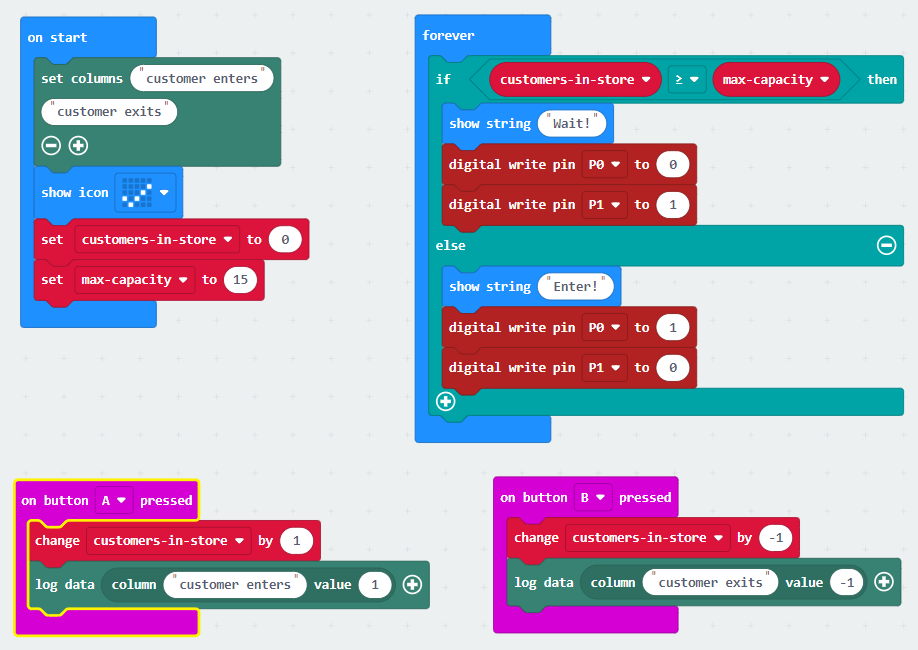

The Covid pandemic has had an enormous impact on hospitals, the economy, businesses and schools. Technology is one of the main supports in finding solutions to slow down and stop the spread of Covid 19. The quick transition of businesses and schools to online, remote working, prevented the complete disruption of day-to-day work during the height of the pandemic. The use of computational systems allowed researchers and scientists to track the spread of the virus and search for solutions to combat the spread of the virus. Using online, collaborative software such as 'Microsoft Teams' for meetings, allowed groups to work together without close contact. Computer systems have helped enormously with the control and management of Covid. 3D printers were used for helping to produce PPE equipment like masks and visors. The collection and analysis of data, has helped with decision making, and technology played a crucial role in developing a vaccine for the virus. "Technologies powered by artificial intelligence (AI) including machine learning, image recognition, and deep learning algorithms can be used for early detection and diagnosis of the infection, more rapid drug discovery for developing new treatments (Brohi, Jhanjhi, Brohi, & Brohi, 2020)." The potential of AI to develop scientific solutions, for Covid and a range of other challenging social issues, is an area that I intend to study further.
For this project, I have focused on alleviating the problem of too many people gathering in crowds indoors. A high concentration of people in an enclosed area, prevents them from maintaining the required social distance of 2 meters. This increases the risk of the virus spreading. So, by developing an information system that helps to inform people when there are too many people gathering in a particular area, will help to reduce the spread of the virus. There are a number of ways of developing this information system, such as the use of drones using software to count the number of people gathering in a group outdoors; but considering the limitations of the technology at my disposal, I've decided to focus on a system to count people entering and exiting buildings. The microbit will act as a data collection device, which is activated by a person passing through a doorway. The maximum number of people allowed in the building will be calculated using the area of the indoor space. Based on this number, the microbit will signal to people at the entrance of the building, whether they can enter, using a traffic light system. When the number of people in the building is below capacity, there will be a green light at the entrance, along with the word: 'Enter'. When the number of people in the building has reached the capacity, the green light will be replaced with a red light and the message: 'Capacity reached. Wait for green light to enter.'
I've chosen the 'waterfall' design approach. I considered using 'agile', but since I do not have the
option of close cooperation of the end user on a regular basis, I felt that the 'waterfall' approach
was more appropriate. The waterfall approach is in line with the project requirements, which requires formal,
detailed documentation, making the deign process easier to understand for memebrs who join the team at a
later stage.
The waterfall approach to software development involves a formal, more rigid approach to the design process.
It is a staged process, rather than an iterative process. Each stage of the process should be completed
before the next stage begins; and the stages should move in one direction, like a waterfall.
The features of a waterfall design process include:


| Dates | Stages | Notes |
|---|---|---|
| 10/01/21 | Investigate | |
| 15/01/21 | Plan | |
| 20/01/21 | Design | |
| 05/02/21 | Create | |
| 20/02/21 | Evaluate | |
| 01/03/21 | Document |
Investigate: I read through webpages and documents provided in the project brief:
Plan: To help formulate a plan for the project, I made a mind-map, including all the relevent information.
Design: Flowchart, notes.
Create: Built embedded system, wrote python code, firebase database, HTML page.
Evaluate: Tested hardware and software.
Document: Documented process throughout, making notes as part of the waterfall design process.
Summary: Record your activities, thinking and adaptations as you progress through each iteration of each stage of the design cycle and use these recordings to describe the design process leading to your solution. Key questions: What design approach did you take? What are the stages involved and what activities did you carry out during each stage? Did you iterate? If so, why and how often? What problems occurred during the design and how did you overcome them? Did you change your mind about any aspect of the design or did you decide to add any new features to the design at any stage? If so, why, and what was the impact?